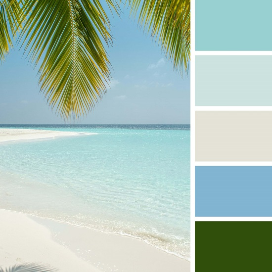
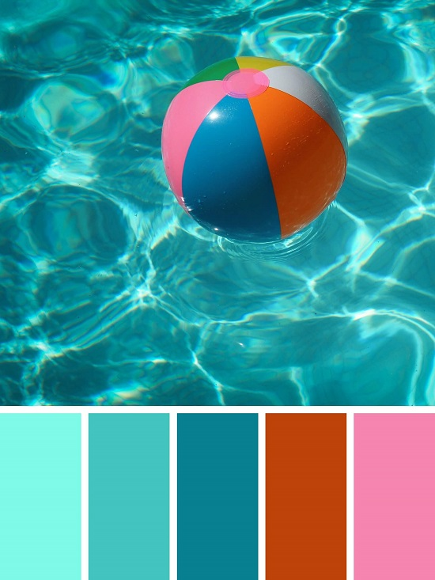
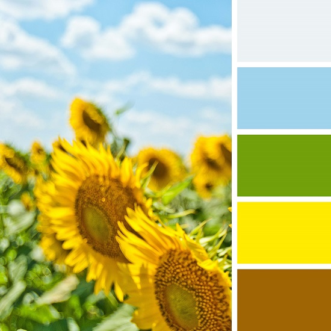
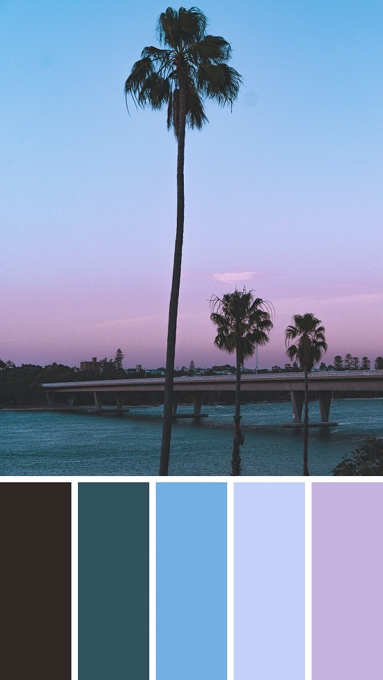
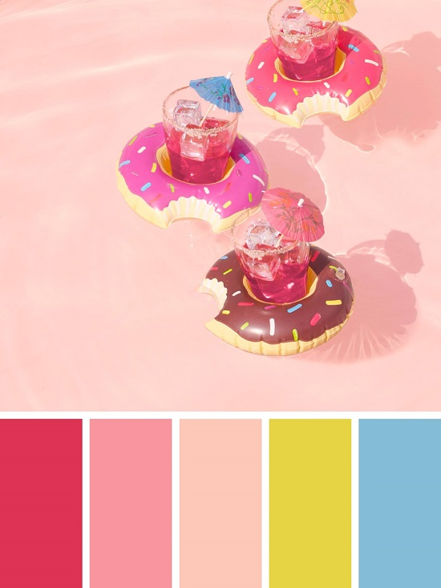
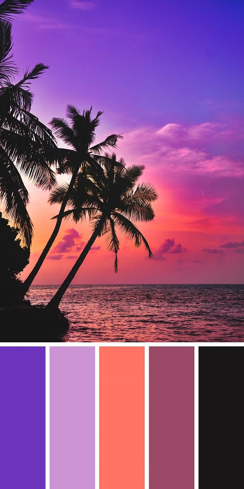
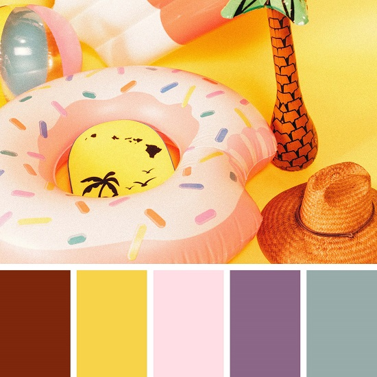
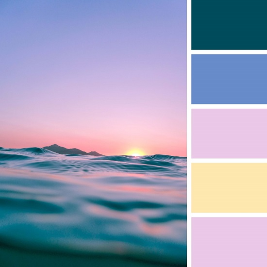
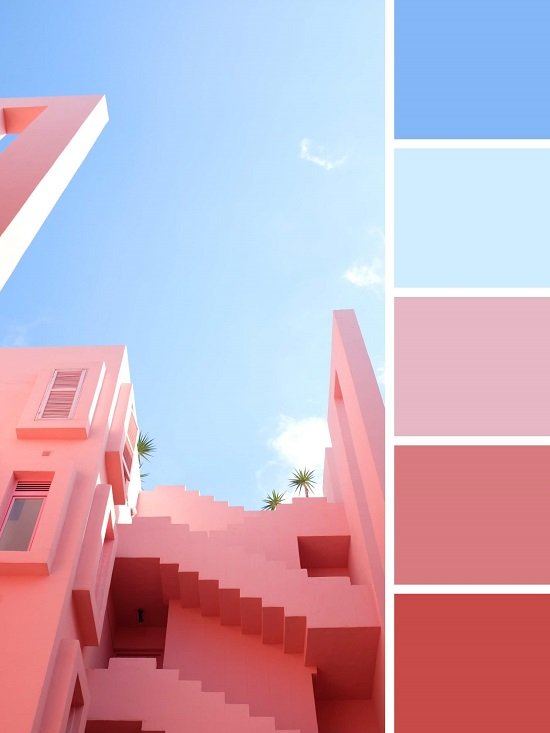
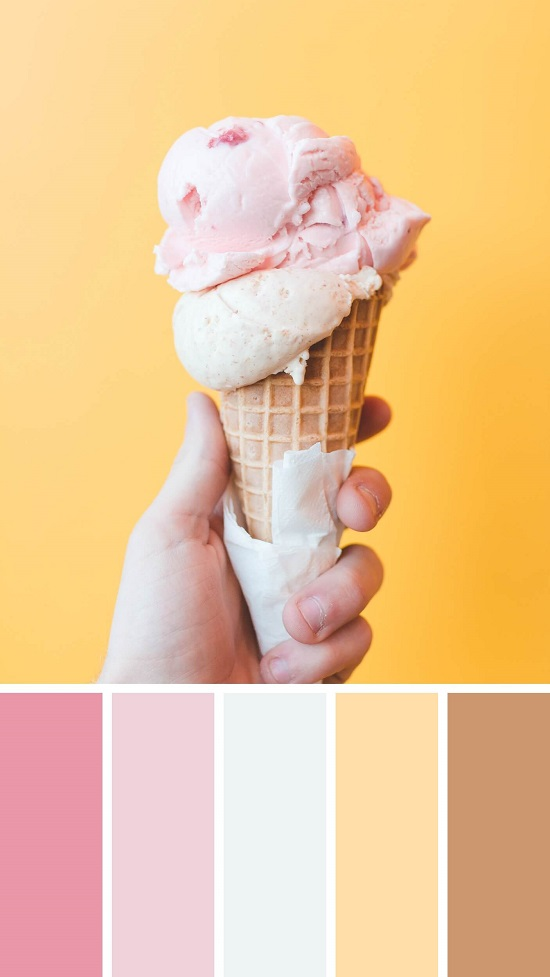

July 27, 2021 │ By : Inaas Asad
“One can speak poetry just by arranging colors well.” – Vincent van Gogh
A lot of designers and artists use color palettes in their work, as they are essential to the composition and balance of a piece.
While I was surfing through random websites, I came across a website called cooler.co. It lets you generate random, harmonious color schemes. It even lets you upload any photo and extract a color palette from it. So, I decided to find 10 random summer themed photos off unsplash.com and extract a color palette from each one of them. Hopefully, you can get some inspiration from the color combinations. Here is the result:
1. Beach Theme
2. Beach Ball
3. Sunflowers
4. Blue and Purple Sunset
5. Donuts & Drinks
6. Sunset on the Beach
7. Floaties
8. Ocean
9. Pink Architecture
10. Ice cream
Other Posts: